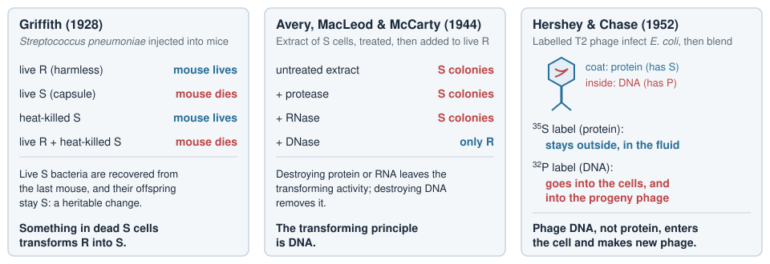
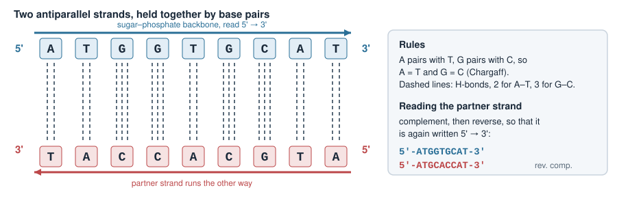
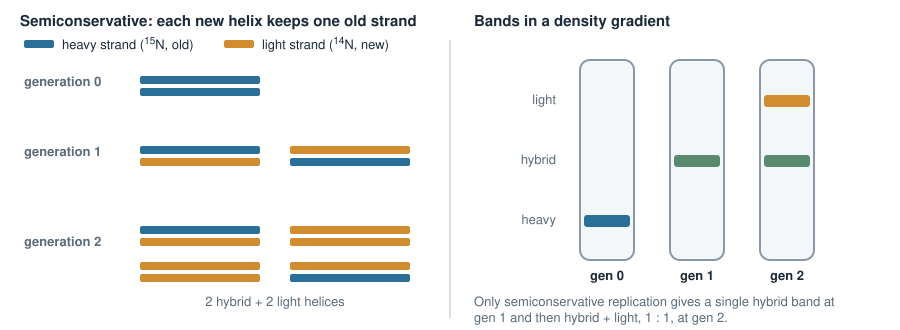
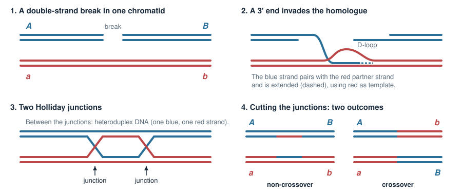

Part 3: DNA, mutation & gene function. What the genetic material is, how it is copied, and how homologues exchange parts
Basic and molecular genetics (5MO104)
About this lecture
Recap of 5MO103 (Microbiology and basic molecular biology), seen through the eyes of a geneticist. In Parts 1 and 2 a gene was an abstract “factor” on a chromosome. Now we open it up.
How we know that genes are made of DNA: Griffith, Avery, Hershey and Chase.
The double helix: base pairing, antiparallel strands, and how to read the partner strand (the reverse complement).
Semiconservative replication and the Meselson–Stahl experiment.
The replication fork in brief, and why copying errors matter to a geneticist.
Homologous recombination at the molecular level: the Holliday junction, the molecular basis of crossing over from Part 2.
Book: Hartwell, Genetics: From Genes to Genomes, DNA structure, replication and recombination chapter.
What must the genetic material do?
From Parts 1 and 2 we already know what genes do. Any candidate molecule has to explain it:
Property seen in genetics
What the molecule must be able to do
Genes are passed on faithfully, generation after generation
be copied accurately before every cell division
Genes come in different alleles
vary: store information in a sequence that can change (mutate)
Genes control phenotypes (round vs wrinkled, HbA vs HbS)
carry information that the cell reads to make RNA and proteins
Homologues exchange parts (crossing over, Part 2)
be cut and rejoined precisely, at matching positions
Until the 1940s most biologists bet on protein: 20 amino acids seemed a richer alphabet than DNA’s 4 bases.
Three experiments: genes are DNA

Griffith: a heritable change (R → S) can be caused by something from dead cells: transformation.
Avery, MacLeod & McCarty: only DNase destroys the transforming activity.
Hershey & Chase: phage DNA, not phage protein, enters the bacterium and directs new phage.
The double helix
Watson and Crick (1953), using X-ray data from Rosalind Franklin and Maurice Wilkins, and Chargaff’s rules (A = T, G = C):
Two strands, each a sugar–phosphate backbone with a base on every sugar.
A purine (A, G) always pairs with a pyrimidine (T, C), so the helix has a constant width.
The strands are antiparallel: one runs 5′ → 3′, the partner 3′ → 5′.

“It has not escaped our notice that the specific pairing we have postulated immediately suggests a possible copying mechanism for the genetic material.” (Watson & Crick, 1953)
Reading DNA: strands and the reverse complement
A sequence is always written 5′ → 3′. To write the partner strand, complement every base, then reverse the order:
this strand
5′-ATGGTGCAT-3′ (start of the HBB coding sequence)
complement, as it lies
3′-TACCACGTA-5′
reverse complement
5′-ATGCACCAT-3′
Why a geneticist cares. A genome database stores only the + strand of each chromosome. HBB lies on the − strand of chromosome 11, so the sickle-cell change looks different depending on which strand you read:
on the HBB mRNA and coding sequence: c.20A>T (GAG → GTG, Glu → Val);
on the chromosome’s + strand (dbSNP rs334): T>A at position 5,227,002 (GRCh38).
Same mutation, same base pair, two strands.
Three ways to copy a helix
Complementary strands suggest three models of replication. Meselson and Stahl (1958) grew E. coli for many generations in heavy nitrogen (15N), moved the cells to light nitrogen (14N), and separated DNA by density in a caesium chloride gradient.

Model
Generation 1
Generation 2
Semiconservative (each helix = one old + one new strand)
all hybrid
½ hybrid, ½ light
Conservative (old helix stays intact)
½ heavy, ½ light
¼ heavy, ¾ light
Dispersive (old and new mixed along each strand)
all hybrid
all one intermediate band
The replication fork, in brief
Polymerases add nucleotides only to a 3′ end, and need a primer. So one strand is made continuously (leading), the other in short Okazaki fragments (lagging).
Job
Bacterial protein
How genetics found or uses it
Start at the origin
DnaA
dnaA temperature-sensitive mutants cannot start new rounds
Unwind the helix
helicase (DnaB)
dnaB ts mutants stop replication at once at high temperature
Lay down RNA primers
primase (DnaG)
Copy DNA, proofread
DNA polymerase III
the ε subunit (dnaQ, mutD) proofreads: its mutants are mutators
Replace primers, join fragments
DNA polymerase I, ligase
Accuracy: about 1 error in 105 bases from base pairing alone, 1 in 107 after proofreading, about 1 in 109–1010 after mismatch repair.
Homologous recombination: why and where
Homologous recombination uses a matching (homologous) DNA molecule as a template to repair or exchange DNA.
Repair: a double-strand break is mended by copying the sister chromatid. Defects in this pathway (for example in BRCA1 or BRCA2) raise cancer risk.
Meiosis: the cell deliberately breaks DNA (the enzyme Spo11), and repairs the breaks using the homologue. Some repairs become crossovers: the chiasmata you saw in Part 2.
The model, first proposed by Robin Holliday (1964) and later refined to start from a double-strand break:
A double-strand break; the 5′ ends are trimmed back, leaving 3′ single-strand tails.
A 3′ tail invades the homologue, pairs with its complementary strand, and primes new DNA synthesis.
The two duplexes become joined by Holliday junctions: points where strands cross between helices.
Enzymes cut the junctions to separate the helices.
From Holliday junctions to crossing over

Cut one way: crossover, A b and a B. The flanking markers are recombinant: this is what you counted as recombination frequency in Part 2.
Cut the other way: non-crossover. The flanks stay parental (A B, a b), but a short stretch of heteroduplex DNA remains.
If a heteroduplex covers a gene where the homologues differ, mismatch repair may “correct” one strand to match the other: gene conversion. In fungal tetrads this shows up as 3 : 1 instead of the Mendelian 2 : 2.
Summary
Concept
Key fact
Genes are DNA
Griffith (transformation), Avery et al. (only DNase stops it), Hershey–Chase (phage DNA enters the cell)
Double helix
two antiparallel strands; A–T, G–C; one strand determines the other
Reverse complement
the partner strand, written 5′ → 3′: complement every base, then reverse
Strands in databases
genome records use the + strand; gene names (c.) use the gene’s own strand. HBB c.20A>T = + strand T>A
Replication
semiconservative (Meselson–Stahl: hybrid, then hybrid + light)
Fork
leading and lagging strands; polymerase proofreads; mismatch repair finishes; error about 10−9–10−10 per base
Next: Mutation & complementation. What happens when copying or repair fails: kinds of mutation, mutagens, the Ames test, and how geneticists decide whether two mutations hit the same gene.
Gene expression (recap). How the cell reads the sequence: transcription, splicing, translation and the genetic code.
Part 4: Digital analysis of DNA. PCR and sequencing exploit exactly the rules on today’s slides: primers, 5′ → 3′ synthesis and base pairing.
Exercise in R: write revcomp() and compute GC content of the HBB mRNA.